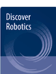
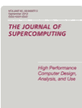

Nonlinear Dynamics, 114(13), 869, 2026
First authorDOI: 10.1007/s11071-026-12695-2

I am an undergraduate student at Universiti Utara Malaysia (UUM). My research focuses on embodied intelligence and robotics, causal AI, reinforcement learning, explainable AI, and LLM-enabled planning, with an emphasis on robust autonomous systems and edge intelligence.
Selected and current publications from my latest academic CV.
Designed a decoupled RL–LLM navigation architecture that separates high-level cognitive planning from low-level control under partial observability. Evaluated 1,750 episodes across five difficulty levels and seven baselines, with edge deployment on Orange Pi 4.
Autonomous robot navigation · 2026Developed a kinematic-aware optimization method for collision-free mobile robot path planning, including safety-oriented initialization, exploration/exploitation refinements, anti-stagnation mechanisms, and trajectory smoothing.
Mobile robot path planning · 2026Built a computer-vision-to-manipulation pipeline connecting American Sign Language recognition with the Shadow Dexterous Hand, mapping recognized signs to dexterous-hand motions for robotic reproduction.
Computer vision · Dexterous manipulationPeer reviewer for Springer Nature journals. Counts below reflect the reviewer dashboard as of 1 September 2026.


Programming
Python; Java
AI & Machine Learning
Reinforcement learning; causal inference and discovery; explainable AI; computer vision; LLM-enabled planning and agentic systems
Robotics & Simulation
ROS 2; Gazebo; autonomous navigation; path planning; dexterous manipulation
Research & Engineering
Linux; Git; LaTeX; experimental design; scientific visualization; literature review and manuscript preparation
我是马来西亚北方大学（UUM）信息技术专业本科生。研究方向包括具身智能与机器人、因果人工智能与因果发现、强化学习、 可解释人工智能以及 LLM 驱动的规划，重点关注鲁棒自主系统与边缘智能。
按照最新学术 CV 更新。
设计并实现解耦式 RL–LLM 导航架构，将高层认知规划与部分可观测条件下的低层控制分离；在五种难度与七个基线下完成 1,750 个 episode，并在 Orange Pi 4 上完成边缘部署验证。
自主机器人导航 · 2026面向复杂栅格环境中的无碰撞移动机器人路径规划，加入安全初始化、探索/利用改进、抗停滞机制与轨迹平滑，并完成仿真与实机验证。
移动机器人路径规划 · 2026构建从计算机视觉到机器人操作的完整流程，将美国手语识别结果映射为 Shadow Dexterous Hand 动作，实现手势复现。
计算机视觉 · 灵巧操作Springer Nature 期刊同行评审；下列数据以 2026 年 9 月 1 日 Reviewer Dashboard 为准。
编程
Python；Java
AI 与机器学习
强化学习、因果推断与因果发现、可解释 AI、计算机视觉、LLM 驱动规划与智能体系统
机器人与仿真
ROS 2、Gazebo、自主导航、路径规划、灵巧操作
科研与工程
Linux、Git、LaTeX、实验设计、科学可视化、文献综述与论文写作